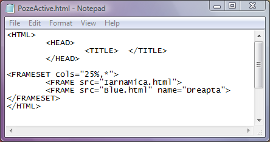
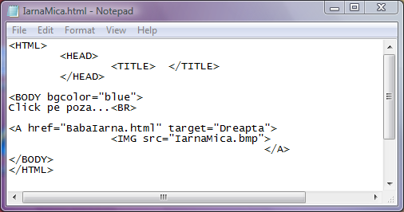

Utilizarea imaginilor ca zona activa
Pana acum am utilizat doar textul ca zona activa. Adica, intre perechea de etichete
A si respectiv /A am inclus text pe care prin click se solicita incarcarea unei alte pagini web.
In ceea ce urmeaza vom seta ca zona activa o imagine. Pentru aceasta este suficient ca intre
etichetele A si /A sa fie plasata o eticheta IMG a carei fisier sursa sa fie imaginea pe care o
dorim ca zona activa.
Iata un exemplu, in care prin click pe imaginea din cadrul stang se va incarca in cadrul din
dreapta o alta pagina web.

Iata si codul paginii web din cadrul stang in care este folosita ca zona activa imaginea
din fisierul IarnaMica.bmp

Inapoi la Legaturi